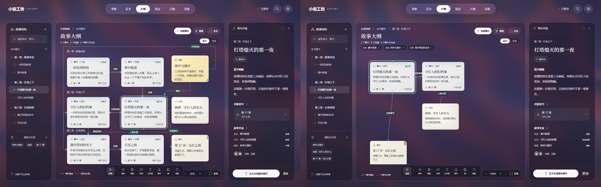

1440 × 900，同一作品内容、选中事件与背景静帧。正式界面使用真实组件与数据接口；容器、统计和面包屑按实际层级显示。并排图左为原稿，右为正式界面。

固定三栏位置、字体、顶栏和详情纵向节奏见 comparison-report.json。底部创建栏向左移 17.5px 以消除原稿与缩放栏的交叠；跨层提示单独占行，画布留出底部工具安全区。总览供全书定位，100% 或进入容器可恢复阅读。测试环境、剩余差异与验收记录见 README.md。